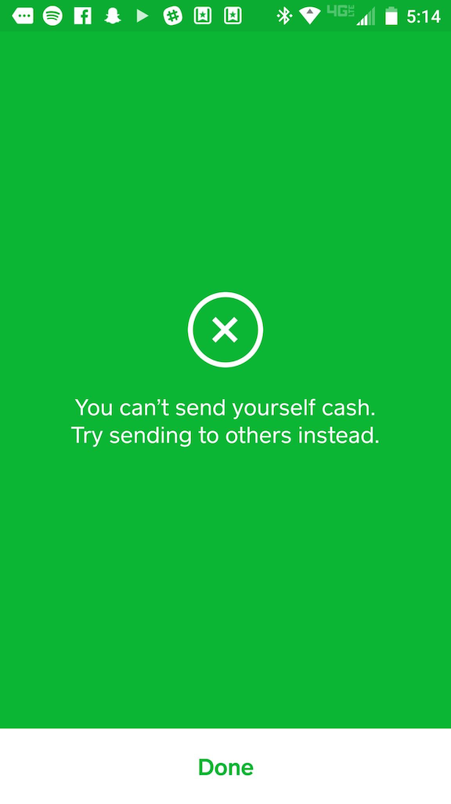
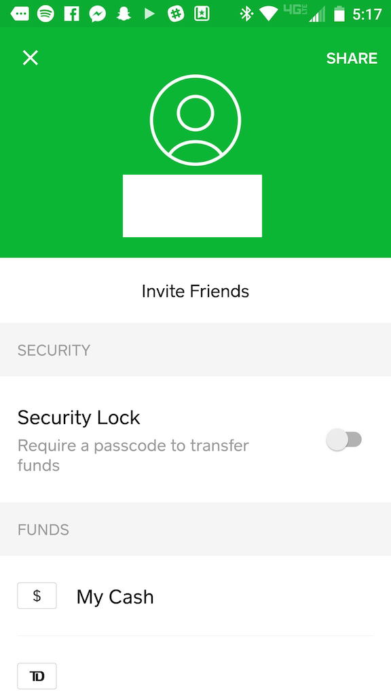

| The Square Cash app has a very clear focus: allowing its user to send and receive money for free. It takes a notoriously complex process and boils it down to a very simple experience. The simplicity is likely reliant on a complex backend negotiation of fees and allowances, however it is also equally in part due to the clean user interface/experience that the mobile app provides. |
| The UI presented by the app is immediate and clear. The app opens up directly to it's main function: a set of numbers to choose your amount and an ability to either request the given amount, or pay it. The numbers on the screen are not that of a system keyboard, they are narrowed down to exactly the keys needed to complete a transaction. This simple design reduces the memory load on the user, which is especially important as they are likely opening this app with a clear goal of quickly making a payment and want no distractions from that task. Framiliarity is also used by having the buttons labeled with common verbs used to express transactions, and also having the user's "virtual cash" represented by an actual rendering of their "virtual card" as a credit card. |
| Feedback provided by the UI is also simple and universally clear. Buttons animate when pressed, and if a button switches the page of an app, there is a small animation that centralizes in on the button so that the use is made aware of the action that they just triggered. Also, in regards to errors, feedback is expertly communicated to the user as the element causing the problem shakes and haptic feedback is provided. Thus, if the user tries to enter too large of a sum or send zero dollars, the dollar amount on their screen shakes. This process clearly communicates errors without the need for a popup error message / delay to the user. |
|   |
| The app is very consistent in its use of color schemes and menu layouts, however I would argue that it's not entirely externally consistent with the 'Material Design' Android Design external to it. The buttons along the top are a bit foreign and lacking in consistency, however due to the extremely small number of possible actions that the user can take, they would likely be quickly understood through user experimentation. |
| Slack is a collaboration and chat tool designed with productive teams in mind. It allows teams to collaborate in different chat 'channels', which have many users and are often named by department/purpose. It also allows team members to message each other individually. |
| Visibility and obviousness is Slack's best benefit in terms of UI design. While the function that it executes doesn't seem groundbreaking or innovative, the level of simplicity that it pulls it off with is what makes it strive. There are many additional and optional add-ons and features that a company can bring into their channels, however such additions must be searched for. The average user of the application only has to deal with the core chat features advertised to them. The side bar of information is very clearly laid out, and a user can instantly tell if there are any notifications that they have missed out on, what group they're currently in, etc. all in a simple interface that is static. This side bar being static, consistent , and simple is of huge importance as it allows the user to accurately understand their current work situation at a quick glance. |
| Finally, in terms of providing help and documentation , Slack takes an interesting approach by hedging its bets on speaking the user's language and providing a "Slackbot" in their private chat list whom they can message with their questions. I can't speak for the functionality of this feature to a new user, however it is definitely a smart decision as it allows the user to learn how to use the application by actually using the application. |
| PodcastAddict is a podcast app that I use simply because it was the top rated/downloaded free one at the time that I downloaded it. I don't use the large number of features that it has, heavily due to its confusing interface. I have a few podcasts added to it that automatically update and download for me under wi-fi, therefore it serves its purpose and I haven't ever had to seek out a replacement. However, I now realize that quite a few of these features are things that would definitely interest me were they not buried under an awkward navigation. |
| The navigation's main issue is one of consistency . Messaging is not consistent or clear. Framiliarity is very much lacking, as the app relies on a set of unique, non-externally consistent icons to communicate many of its messages. Luckily, when these buttons are pressed, there is often a small pop-up on the bottom of the screen briefly explaining what function was completed, however I believe that is a compromise at best. A help guide / explanation of the icon definitions is provided, however said guide simply overloads the user's memory load . Some icons, such as the eye, instantly change once pressed, creating a very confusing situation for the user's ability to recall. |
| This app is definitely an example of "shortcuts gone wrong", where the intent was clearly there but it didn't pan out. Icons are reused within the same page and sometimes have alternative meanings. There are too many ways to do the exact same thing; it's very inconsistent and not simple. I believe that this may have been a side effect of attempting to follow Material and mobile design standards without sticking strictly to them (ex: the podcasts page can be refreshed by pulling down, as is standard on mobile, yet a refresh button is also included in the taskbar). This could be fixed by stripping away the duplicate links and features. |
| The Playstation 4 Operating System is designed to allow users of the console to get to their content (Games, Movies, Music, etc.) quickly. Similarly to as I discussed before with PodcastAddict, it does do a fine job of this main function, but everything surrounding that is a bit of a mess. |
| The main menu that the user faces when they turn on their console is a string of icons, organized chronologically with the most recently opened app on the left. This admittedly does do a good job of minimising user memory load for the standard user who is probably playing a specific game consistently- they can launch their console and go directly into their game. If a game is in the disc drive, or was recently suspended, it will also be brought to the front of the queue. |
| However, this design doesn't well suit many other types of users. For example, I get two free games every month as a part of my "Playstation Plus" subscription. Thus, as you can imagine, I have many game tiles on my menu. This long, linear menu means that I have to scroll through each title, slowly, waiting for each game's name to appear in most cases if I cannot recognize them by their icons. This is not efficient, obvious, or simple. Eventually, the list ends and you are dumped into a larger scrolling menu called a 'library', but this is equally cluttered and confusing and lacking organization options. |
| Up until this month, consistency was also a huge for the os, as games couldn't be grouped into folders, but apps were. The addition of folders fixed a large part of the issue that the os had, as games can now be grouped under one tile with a name defined by the user. Therefore, the os works just as well for a user with many games as it did for the user with one 'go to' game. This issue was becoming more and more of an issue as the console has been out for a couple years now, thus game library sizes were growing; this update was celebrated on the internet. |
| On the other hand, lack of clearly marked navigation is an issue that still plagues the system. Luckily, since the user is navigating with a d-pad that has four strict directions, they can figure it out through experimentation. However, the interface of all different sizes and types of icons is initially very overwhelming. Some functions also aren't clear until the user has 'rested' for a second, after which a legend explaining what each button will do pops up on the bottom of the screen. Again, because the buttons used on the controller are iconic at this point, being often associated with actions such as 'accept', 'close', 'detail,' this issue is luckily solved due to framiliarity. However, such luck is not good enough as many users do not have such familiarity with the controller buttons. |